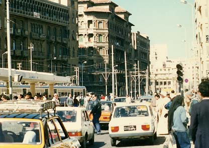

 ある日知人とレスランに行くことにした。タクシーは道路事情で道路の反対側に停車した。道路幅は広く片側３ 車線である。交通量は多く、車が途絶えそうにない。辺りを見回しても横断歩道はない。知人は私の手をつかみ渡 ろうと始める。え！ためらったが知人の強引な誘いで、仕方なく車の流れと平行に知人と並び渡ることにする。１ 車線分を無事に渡ると、体の前後に車は猛スピードで走り去る、怖い。更に間合いをみて１車線。初めの３車線は 車が左から来る、ここは日本と違って車は右側通行である。真ん中まで来る、ここでは車は体の前後を行き違うこ とになる。車のスピードは全く落としてくれない、コエーヨー。また、１車線ずつ渡ることになり無事渡った。一般に多くに人はこうやって道路横断をしているようである。しかし怖かった。交通量の多いところでは一人で は絶対にわたれない。 |